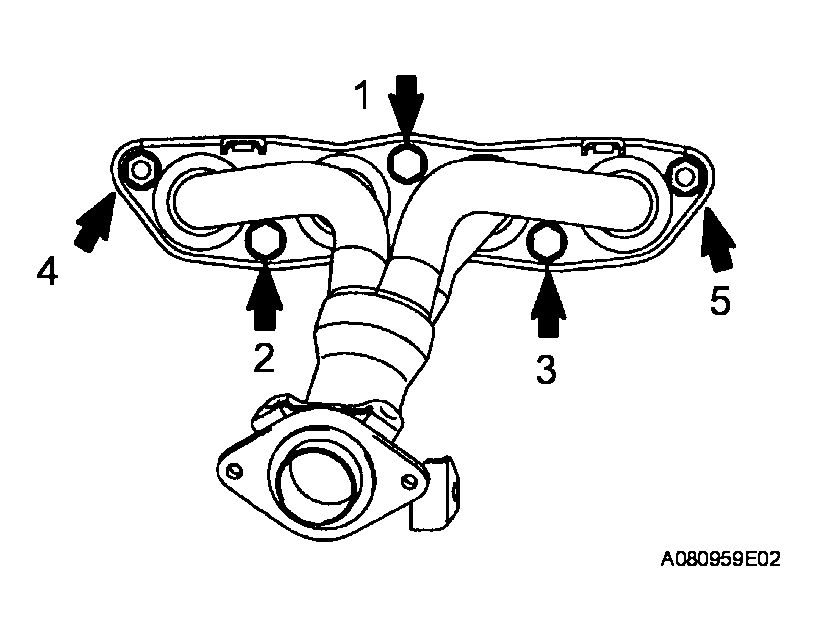
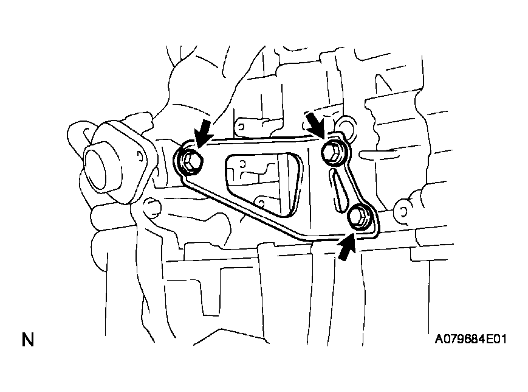
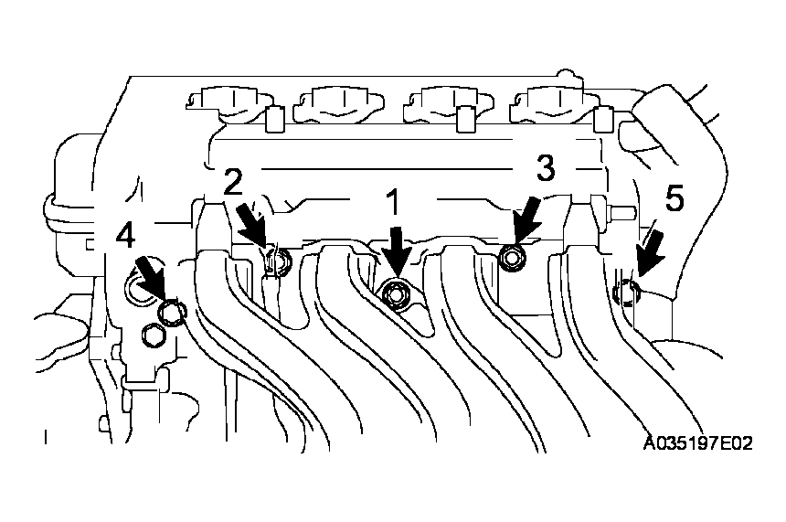
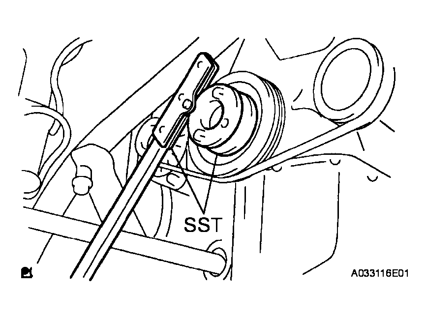
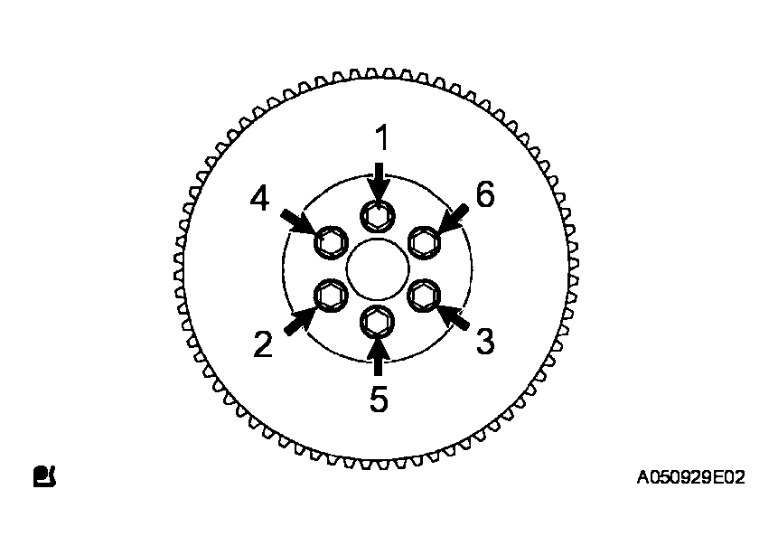
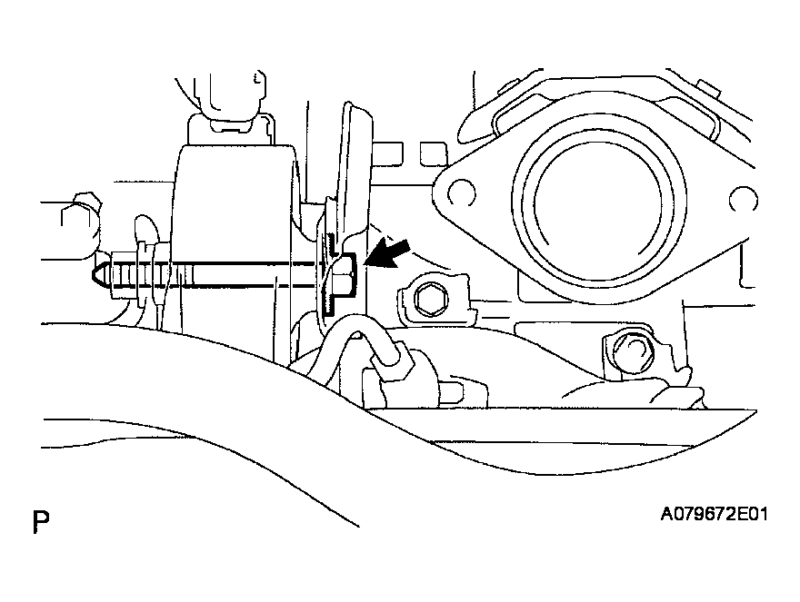
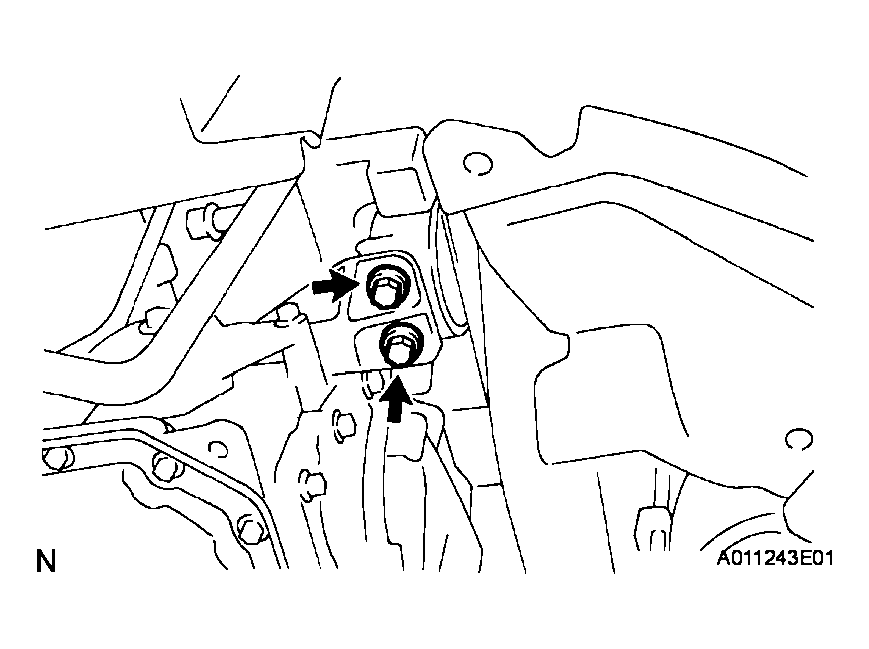
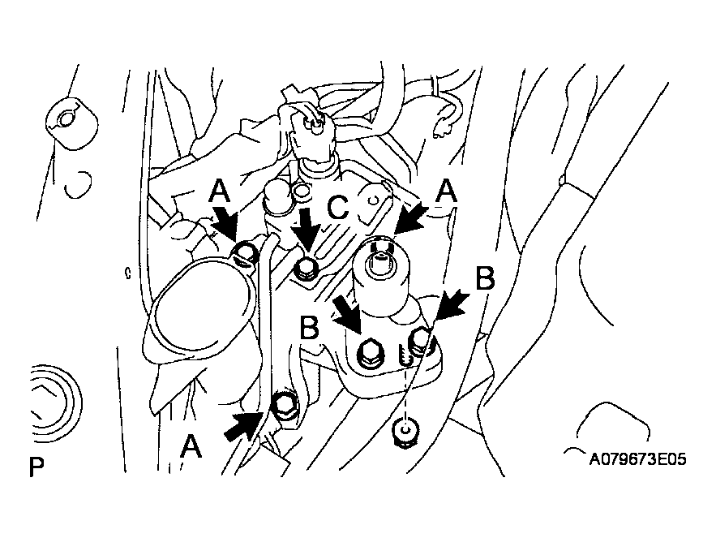
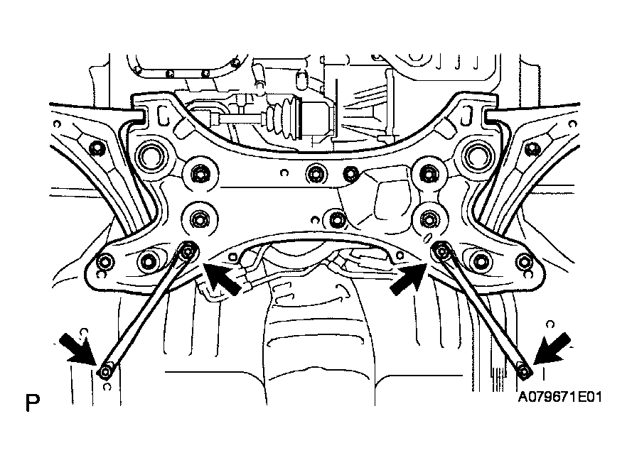

Engine Assembly: Installation
- INSTALL OIL PRESSURE SWITCH (See ON-VEHICLE INSPECTION )
- INSTALL KNOCK SENSOR (See INSTALLATION )
- INSTALL ENGINE COOLANT TEMPERATURE SENSOR
- Install a new gasket onto the sensor.
- Using SST, install the temperature sensor in place.
SST 09817-33190
Torque: 20 N*m (204 kgf*cm, 15 ft.*lbf)
- INSTALL NO. 1 WATER BYPASS PIPE
- Install a new gasket and the water bypass pipe with the 2 bolts and 2 nuts.
Torque: 9.0 N*m (92 kgf*cm, 80 in.*lbf)
- Install a new gasket and the water bypass pipe with the 2 bolts and 2 nuts.
- INSTALL IGNITION COIL
- Install the 4 ignition coils with the 4 bolts.
Torque: 9.0 N*m (92 kgf*cm, 80 in.*lbf)
- Install the 4 ignition coils with the 4 bolts.
- INSTALL EXHAUST MANIFOLD
- Using several steps, install a new exhaust manifold gasket and the exhaust manifold with the 3 bolts and 2 nuts in the sequence shown in the illustration.

Courtesy of © TOYOTA, LICENSE AGREEMENT TMS1002Torque: 27 N*m (275 kgf*cm, 20 ft.*lbf)
- Using several steps, install a new exhaust manifold gasket and the exhaust manifold with the 3 bolts and 2 nuts in the sequence shown in the illustration.
- INSTALL NO. 1 EXHAUST MANIFOLD HEAT INSULATOR
- Install the exhaust manifold heat insulator with the 4 bolts.
Torque: 8.0 N*m (82 kgf*cm, 71 in.*lbf)
- Install the exhaust manifold heat insulator with the 4 bolts.
- INSTALL MANIFOLD SUPPORT BRACKET
- Install the manifold support bracket with the 3 bolts.

Courtesy of © TOYOTA, LICENSE AGREEMENT TMS1002Torque: 44 N*m (449 kgf*cm, 32 ft.*lbf)
- Install the manifold support bracket with the 3 bolts.
- INSTALL BOOSTER VACUUM TUBE
- Install the booster vacuum tube with the 2 bolts.
Torque: 9.0 N*m (92 kgf*cm, 80 in.*lbf)
- Install the booster vacuum tube with the 2 bolts.
- INSTALL INTAKE MANIFOLD
- Install a new gasket onto the intake manifold.
- Install the intake manifold with the 3 bolts and 2 nuts. Using several steps, uniformly tighten the bolts and nuts in the sequence shown in the illustration.

Courtesy of © TOYOTA, LICENSE AGREEMENT TMS1002Torque: 30 N*m (306 kgf*cm, 22 ft.*lbf)
- CONNECT NO. 2 VENTILATION HOSE (See INSTALLATION )
- CONNECT VENTILATION HOSE (See INSTALLATION )
- INSTALL DRIVE PLATE (for Automatic Transaxle)
- Hold the crankshaft pulley with SST.
SST 09213-58012 (91111-50845), 09330-00021
- Install the drive plate.
- Clean the bolt and bolt hole.
- Apply adhesive to the bolts.
Adhesive: Part No. 0933-00070, THREE BOND or equivalent
- Using several steps, uniformly install and tighten the 6 bolts in the sequence shown in the illustration.Courtesy of © TOYOTA, LICENSE AGREEMENT TMS1002
Torque: 88 N*m (900 kgf*cm, 65 ft.*lbf)
- Hold the crankshaft pulley with SST.
- INSTALL FLYWHEEL (for Manual Transaxle)
- Hold the crankshaft pulley with SST.
SST 09213-58012 (91111-50845), 09330-00021
- Install the flywheel.
- Clean the bolt hole.
- Apply adhesive to the bolts.

Courtesy of © TOYOTA, LICENSE AGREEMENT TMS1002Adhesive: Part No. 0933-00070, THREE BOND or equivalent
- Using several steps, uniformly install and tighten the 6 bolts in the sequence shown in the illustration.

Courtesy of © TOYOTA, LICENSE AGREEMENT TMS1002Torque: 49 N*m (500 kgf*cm, 36 ft.*lbf)
NOTE: Do not reuse the flywheel bolt. It may cause breakage of the flywheel bolt. - Mark the flywheel bolt with paint.
- Retighten the flywheel bolts by an additional 90°.
- Check that the paint mark is at a 90° position from the original location.
- Hold the crankshaft pulley with SST.
- INSTALL CLUTCH DISC (for Manual Transaxle) (See INSTALLATION )
- INSTALL CLUTCH COVER (for Manual Transaxle) (See INSTALLATION )
- INSTALL MANUAL TRANSAXLE (for Manual Transaxle) (See INSTALLATION )
- INSTALL AUTOMATIC TRANSAXLE (for Automatic Transaxle) (See INSTALLATION )
- INSTALL GENERATOR (See REASSEMBLY )
- INSTALL STARTER (See INSTALLATION )
- INSTALL FRONT SUSPENSION CROSSMEMBER
- Fasten the bolt to secure the engine and transaxle assembly to the suspension crossmember.

Courtesy of © TOYOTA, LICENSE AGREEMENT TMS1002Torque: 64 N*m (653 kgf*cm, 47 ft.*lbf)
- Fasten the bolt to secure the engine and transaxle assembly to the suspension crossmember.
- INSTALL VANE PUMP
- Install the vane pump assembly with the 2 bolts.
Torque: 44 N*m (449 kgf*cm, 33 ft.*lbf)
HINT:
Temporarily tighten bolt A so that the V belt can be adjusted in a later step.
- Install the vane pump assembly with the 2 bolts.
- INSTALL VANE PUMP V BELT
- Temporarily install the V belt on each pulley.
- ADJUST VANE PUMP V BELT (See REMOVAL )
- INSTALL ENGINE AND TRANSAXLE ASSEMBLY
- Set the engine together with the transaxle on the engine lifter.
- Install the engine together with the transaxle onto the engine compartment.
- Temporarily install the suspension crossmember with the 8 bolts.
- Install the engine mounting bracket LH onto the engine mounting insulator LH with the 2 bolts.

Courtesy of © TOYOTA, LICENSE AGREEMENT TMS1002Torque: 49 N*m (500 kgf*cm, 36 ft.*lbf)
- Install the engine mounting insulator RH with the 5 bolts and nut.

Courtesy of © TOYOTA, LICENSE AGREEMENT TMS1002Torque: 45 N*m (459 kgf*cm, 33 ft.*lbf) for bolt A
52 N*m (530 kgf*cm, 38 ft.*lbf) for bolt B
52 N*m (530 kgf*cm, 38 ft.*lbf) for nut
- Install the liquid tube with the bolt.
Torque: 9.8 N*m (100 kgf*cm, 7.2 in.*lbf) for bolt C
- Insert SST to the positioning holes on the right-hand crossmember and on the right-hand of the vehicle.
SST 09670-00010
- Temporarily tighten bolt A, and then tighten bolt B.
- Insert SST into the positioning holes on the left hand crossmember and on the left-hand of the vehicle.
SST 09670-00010
- Temporarily tighten bolt A, and then tighten bolt B.
- Insert SST into the positioning holes on the right hand crossmember and the right-hand of the vehicle, and then tighten the bolts to the specified torque.
SST 09670-00010
Torque: 116 N*m (1,183 kgf*cm, 86 ft.*lbf) for bolt A
70 N*m (714 kgf*cm, 52 ft.*lbf) for bolt B
- Insert SST into the positioning holes on the left hand crossmember and the left-hand of the vehicle, and then tighten the bolts to the specified torque.
SST 09670-00010
Torque: 116 N*m (1,183 kgf*cm, 86 ft.*lbf) for bolt A
70 N*m (714 kgf*cm, 52 ft.*lbf) for bolt B
- Tighten the 4 bolts shown in the illustration.

Courtesy of © TOYOTA, LICENSE AGREEMENT TMS1002Torque: 47 N*m (479 kgf*cm, 35 ft.*lbf)
- INSTALL FRONT SUSPENSION ARM LOWER LH
- Install the front suspension arm lower to the steering knuckle with the nut.
Torque: 98 N*m (999 kgf*cm, 72 ft.*lbf)
- Install a new clip.
HINT:
Perform the same procedure as above on the opposite side.
- Install the front suspension arm lower to the steering knuckle with the nut.
- INSTALL TIE ROD END LH
- Connect the tie rod end to the steering knuckle with the nut.
Torque: 49 N*m (500 kgf*cm, 36 ft.*lbf)
- Install a new cotter pin.NOTE:
- Be careful of the threads and taper portions of the tie rod end to prevent contact with oils.
- After tightening the castle nut, turn it clockwise less than 60° to align the pin holes for the cotter pin.
HINT:
Perform the same procedure as above on the opposite side.
- Connect the tie rod end to the steering knuckle with the nut.
- CONNECT SPEED SENSOR FRONT LH (w/ABS)
- Install the speed sensor with the bolt.
Torque: 8.0 N*m (82 kgf*cm, 71 in.*lbf)
HINT:
Perform the same procedure as above on the opposite side.
- Install the speed sensor with the bolt.
- INSTALL FRONT AXLE HUB LH NUT
- Using a 30 mm socket wrench, install the new hub nut.
Torque: 216 N*m (2,203 kgf*cm, 160 ft.*lbf)
- Using a chisel and hammer, stake the hub nut.
HINT:
Perform the same procedure as above on the opposite side.
- Using a 30 mm socket wrench, install the new hub nut.
- INSTALL STEERING INTERMEDIATE SHAFT (See INSTALLATION )
- INSTALL FRONT EXHAUST PIPE (See INSTALLATION )
- INSTALL FRONT FLOOR PANEL BRACE (See INSTALLATION )
- INSTALL COOLER COMPRESSOR (See INSTALLATION )
- INSTALL GENERATOR V BELT
- Temporarily install the V belt on each pulley.
- ADJUST GENERATOR V BELT (See REMOVAL )
- INSTALL CLUTCH RELEASE CYLINDER (for Automatic Transaxle) (See INSTALLATION )
- CONNECT TRANSMISSION CONTROL CABLE (for Automatic Transaxle) (See INSTALLATION )
- CONNECT TRANSMISSION CONTROL CABLE (for Manual Transaxle) (See INSTALLATION )
- CONNECT FUEL TUBE (See INSTALLATION )
- INSTALL AIR CLEANER (See INSTALLATION )
- INSTALL BATTERY
- INSTALL NO. 2 CYLINDER HEAD COVER
- First tighten the nuts labeled A, and then tighten the nuts labeled B.
Torque: 7.0 N*m (71 kgf*cm, 62 in.*lbf)
- First tighten the nuts labeled A, and then tighten the nuts labeled B.
- INSTALL RADIATOR (See INSTALLATION )
- INSTALL UPPER RADIATOR SUPPORT (See INSTALLATION )
- INSTALL RADIATOR SUPPORT OPENING COVER
- INSTALL HOOD LOCK SUPPORT BRACE (See INSTALLATION )
- CONNECT HOOD LOCK (See INSTALLATION )
- INSTALL FRONT BUMPER COVER (See INSTALLATION )
- INSTALL RADIATOR GRILLE (See INSTALLATION )
- CONNECT OIL COOLER OUTLET HOSE (for Automatic Transaxle)
- CONNECT OIL COOLER INLET HOSE (for Automatic Transaxle)
- CONNECT RADIATOR HOSE OUTLET
- REMOVE RADIATOR HOSE INLET
- ADD ENGINE OIL (See REPLACEMENT )
- ADD ENGINE COOLANT (See ON-VEHICLE INSPECTION )
- CHECK FOR ENGINE OIL LEAKS
- CHECK FOR ENGINE COOLANT LEAKS (See ON-VEHICLE INSPECTION )
- CHECK FOR FUEL LEAKAGE (See ON-VEHICLE INSPECTION )
- INSPECT AND ADJUST FRONT WHEEL ALIGNMENT
HINT:
Inspect and adjust front wheel alignment (see FRONT WHEEL ALIGNMENT ).
- INSPECT IGNITION TIMING (See ON-VEHICLE INSPECTION )
- INSPECT ENGINE IDLE SPEED (See ON-VEHICLE INSPECTION )
- INSPECT CO/HC (See ON-VEHICLE INSPECTION )
- INSPECT ABS SPEED SENSOR SIGNAL
- CONNECT CABLE TO NEGATIVE BATTERY TERMINAL